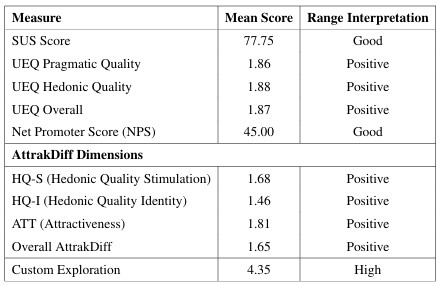
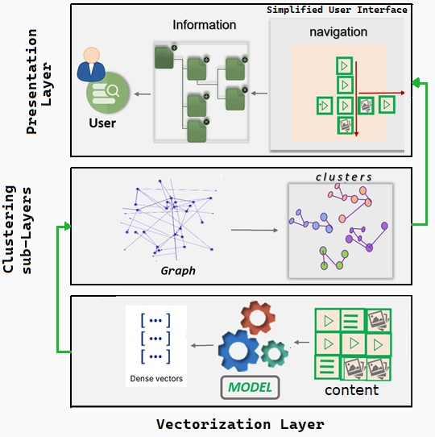

This framework is proposed to solve some of the issues listed in this survey. The existing feature of left/ right swipe has been modified to swipe left/ right across similar items and scroll up/ down across random items or search results. This is aimed to give users a feel of control over the content they choose to see, and also facilitate them in finding new content. In addition, the framework also consists of a thrid novel exploration interface in addition to the exiting two main ways for finding content on social media, which are searching/scrolling and exploration page. Posts here are presented in graph-like visualization where users can double click a post to see other similar posts connected to it like a bird's eye view from top.

Graph based methods are taking over traditional clustering techniques as they don't force you to choose a specific number or assumption before even forming clusters, but gives enough room for the network to unfold its unique structure and depth. A novel clustering approach based on graphs was applied and tested on social content. This grouping, as we know, helps find previously unrecognized patterns in data, depending on the features picked for forming clusters. For a set of pre-formulated queries, our proposed clustering approach clustering gave comparable or better relevancy scores, in comparison to the simple keyword plus KNN similarity measures.

Below is the minimal implementation of the proposed framework.